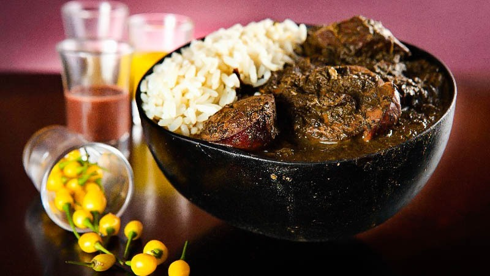

Maniçoba
Um prato típico do Pará feito com folhas de mandioca moídas e carnes defumadas, cozidas lentamente até ficarem macias e saborosas.

Ingredientes
Serve 6 porções
- 1 kg de folhas de mandioca moídas
- 500 g de carne seca
- 300 g de linguiça calabresa
- 300 g de bacon
- 300 g de costelinha defumada
- Alho, cebola e sal a gosto
Modo de Preparo
Tempo estimado: 2 dias
- Lave bem as folhas de mandioca e cozinhe por 24 horas, trocando a água algumas vezes para retirar o ácido cianídrico.
- Em outra panela, cozinhe as carnes até ficarem macias e depois junte com a maniçoba.
- Cozinhe tudo junto por mais 4 a 6 horas, até o caldo engrossar e as carnes incorporarem o sabor.
Dica do Chef: Sirva a maniçoba com arroz branco e farinha d’água — a combinação perfeita da culinária paraense!